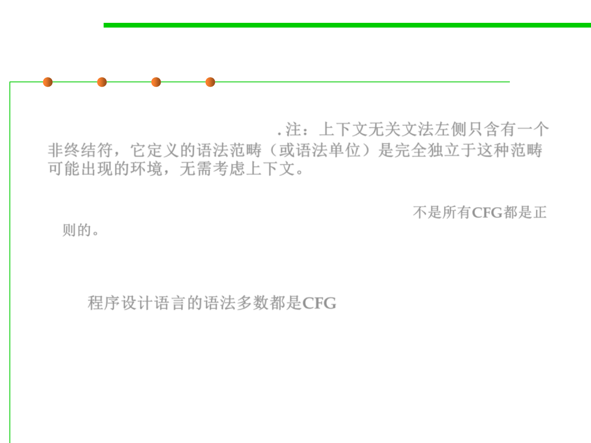

6.3 Maintainability-Oriented Construction Techniques
Context-Free Grammars 上下文无关文法
▪ In general, a language that can be expressed with our system of
grammars is called context-free. 注：上下文无关文法左侧只含有一个
非终结符，它定义的语法范畴（或语法单位）是完全独立于这种范畴
可能出现的环境，无需考虑上下文。
– Not all context-free languages are also regular; that is, some grammars
can’t be reduced to single nonrecursive productions. 不是所有CFG都是正
则的。
– The HTML grammar is context-free but not regular.
▪ The grammars for most programming languages are also context-
free. 程序设计语言的语法多数都是CFG
▪ In general, any language with nested structure嵌套结构 (like nesting
parentheses or braces) is context-free but not regular.